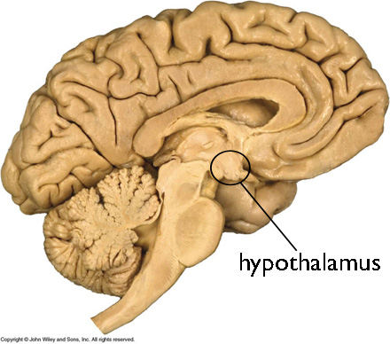
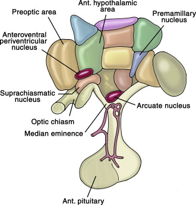
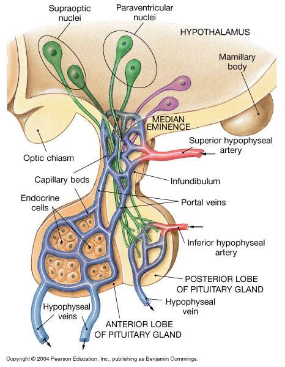
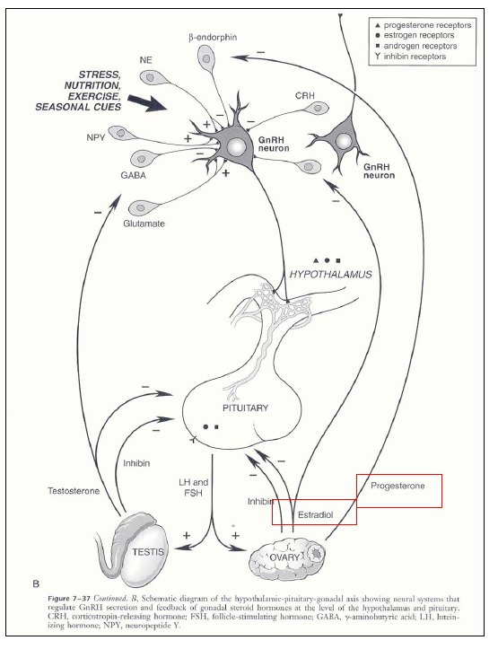
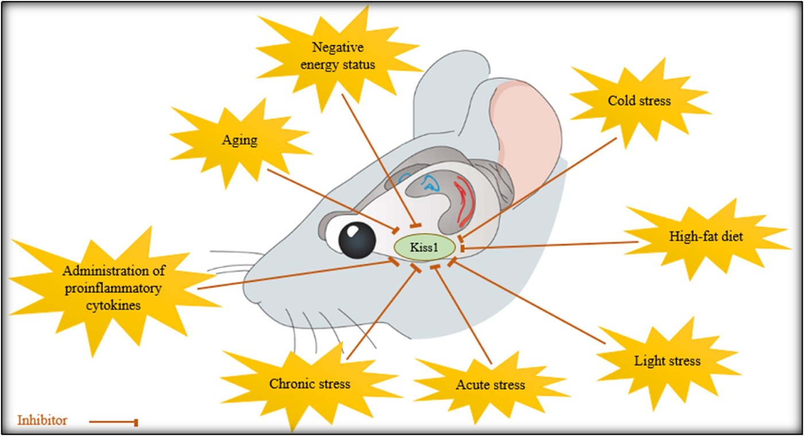
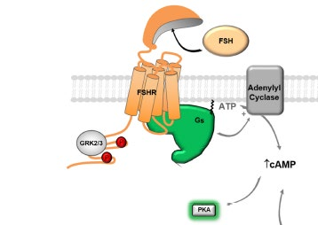
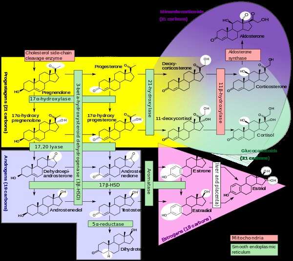
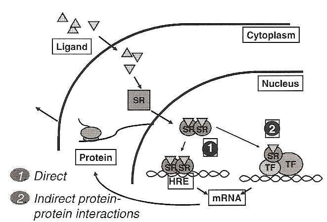

The Hypothalamic–Pituitary–Gonadal Axis
- Three storeys, one loop. Hypothalamus → GnRH → pituitary → LH/FSH → gonad → steroids and inhibin, which shut the top two down.
- The signal is the rhythm. Fast pulses → LH, slow pulses → FSH, continuous GnRH → axis off (how leuprolide works).
- GnRH neurons cannot read estradiol — no ERα. Steroid feedback is relayed through kisspeptin.
- LH and FSH share an α subunit; the β gives identity. LH → theca/Leydig, FSH → granulosa/Sertoli. The LH cell makes the androgen, the FSH cell aromatises it — neither works alone.
- Every steroid starts as cholesterol. Rate-limiting: StAR gets it into the mitochondrion for CYP11A1 to cut to pregnenolone. Then only aromatase and 5α-reductase matter.
Learning Objectives
- Identify the hormones and proteins in the feedback loop of the HPG axis.
- Label the factors that work in positive and negative feedback in this cycle.
Where a section goes past the slides it is marked, with sources at the bottom.
The Whole Axis in One Picture
Learn this diagram first. Every later section is a zoom-in on one arrow of it.
Each relay adds a place to apply control — the hypothalamus is where nutrition, stress, sleep and exercise get a vote. It also explains why you measure LH and FSH: they sit above the gonad, so they say which storey is broken. Low steroid with high gonadotropins = the gonad failed (primary hypogonadism). Low steroid with low or normal gonadotropins = the fault is upstream (secondary/central).
The Hypothalamus: Where Everything Sits
The hypothalamus sits at the base of the forebrain, below the thalamus and above the pituitary. It is not one structure but a cluster of nuclei — discrete balls of cell bodies, each with its own job — laid out along a rostral–caudal axis from the preoptic area at the front to the mammillary bodies at the back. It also runs energy expenditure, body weight, fluid balance, blood pressure, temperature and sleep, which is why reproduction fails first when anything else goes wrong: it is all wired into the same box.

Where it actually is. Base of the forebrain, under the thalamus, sitting directly on top of the pituitary.
The nuclei themselves. Preoptic area at the front, arcuate at the base beside the median eminence. Plant, Front Neuroendocrinol 2012;33:160–68, via the lecture.Now work through them one at a time
Click any structure →Select a structure in the diagram to read what it does and why it matters for the HPG axis.
Preoptic area
Where most GnRH cell bodies live in primates. It also contains the AVPV, the kisspeptin population that carries the positive feedback arm — the one that produces the LH surge.
The origin of the entire axis.Paraventricular nucleus (PVN)
The only nucleus with both neuron types in bulk: magnocellular (oxytocin, vasopressin → posterior pituitary) and parvicellular (CRH, TRH → portal system).
Where stress touches reproduction — PVN CRH suppresses GnRH.Dorsomedial nucleus (DMH)
Relays between the suprachiasmatic nucleus and the PVN, integrating arousal, feeding, circadian output and stress.
Not a direct HPG player — a landmark on the map.Supraoptic nucleus (SON)
Sits above the optic tract — hence the name. Almost entirely magnocellular: axons run the whole way down the stalk and release oxytocin and vasopressin into the systemic circulation.
The cleanest magnocellular example — the neuron is the endocrine cell.Suprachiasmatic nucleus (SCN)
The master circadian clock, directly above the optic chiasm, entrained by light through the retinohypothalamic tract.
Gates the timing of the LH surge — the pulses are clock-anchored.Ventromedial nucleus (VMH)
The satiety centre — lesions here produce hyperphagia and obesity.
Sits immediately above the arcuate: energy balance and reproduction share the neighbourhood.Arcuate nucleus
The infundibular nucleus in humans. It sits at the very base, against the median eminence, so its neurons dump peptide straight into portal blood. It holds the KNDy neurons (kisspeptin / neurokinin B / dynorphin) — the GnRH pulse generator — and the POMC and NPY/AgRP neurons that read leptin.
Where nutrition, body fat and reproduction are wired into one circuit. This is why athletes and underweight patients stop menstruating.Mammillary body
The caudal landmark of the rostral–caudal span. A memory structure (Papez circuit), not an endocrine one.
Degeneration here is the lesion of Wernicke–Korsakoff syndrome.Median eminence (ME)
The bridge joining the two halves of the hypothalamus and funnelling into the stalk — where hypothalamic axons end and their peptides enter the blood. One of the seven circumventricular organs, with no blood–brain barrier (the others: OVLT, subfornical organ, area postrema, pineal, subcommissural organ, posterior pituitary).
The absent barrier is the mechanism — without it no peptide could reach the pituitary.Anterior pituitary
Glandular tissue from oral ectoderm (Rathke’s pouch), not brain. It has no neural connection to the hypothalamus — which is exactly why the portal system must exist. Its gonadotropes carry GnRH receptors and secrete LH and FSH.
Cut the stalk and every output falls — except prolactin, which rises, having been under tonic dopamine inhibition.Posterior pituitary
Not a gland — neural tissue, a downgrowth of the brain, made mostly of the axon terminals of magnocellular neurons from the supraoptic and paraventricular nuclei. It stores and releases oxytocin and vasopressin straight into the systemic circulation.
The second circumventricular organ here — and why these hormones need no portal system.GnRH neurons do not develop in the brain. They arise in the olfactory placode and migrate through the cribriform plate into the preoptic area. That one fact explains Kallmann syndrome: the migration fails, giving hypogonadotropic hypogonadism and anosmia together — two unrelated-looking findings that are one developmental defect (ANOS1, FGFR1, PROKR2). Not on the slides.
Two Kinds of Neuron, Two Ways Out
Hypothalamic endocrine function is carried by exactly two neuron types. The difference is simply how far the axon goes, and everything else follows from that.

| Parvicellular | Magnocellular | |
|---|---|---|
| Also called | Hypophysiotrophic | Neurohypophyseal |
| Cell bodies | Arcuate, preoptic, periventricular, PVN | Supraoptic and paraventricular nuclei |
| Axon ends | In the median eminence — goes no further | In the posterior pituitary, having crossed the ME and run down the stalk |
| Releases into | The portal circulation, locally | The general circulation, directly |
| Products | GnRH, CRH, TRH, GHRH, somatostatin, dopamine | Oxytocin, vasopressin |
| Net effect | Tells another cell to make a hormone | The peptide is the hormone |
The hypophysial portal system
A portal system passes blood through two capillary beds in series. Here: superior hypophyseal artery → primary plexus in the median eminence, where parvicellular endings release GnRH → long portal veins down the stalk → secondary plexus in the anterior pituitary, where GnRH binds GnRH-R on gonadotropes and LH and FSH enter the same capillaries.
Concentration: nanogram quantities dumped systemically would be diluted into nothing — which is why serum GnRH is not a clinical test and you measure the pituitary hormones instead. Fidelity: a pulse only carries information if it arrives as a pulse; the systemic circulation would smear it flat. Specificity: nothing else in the body ever sees a GnRH level high enough to matter.
GnRH: The Molecule
GnRH is a decapeptide. It is made by endocrine and non-endocrine cells and acts in endocrine, paracrine, autocrine and juxtacrine modes.
Mammalian GnRH is GnRH-I (pGlu–His–Trp–Ser–Tyr–Gly–Leu–Arg–Pro–Gly), the key regulator of gonadotropin release. A second form, GnRH-II, originally found in chicken hypothalamus and also present in humans, differs at positions 5, 7 and 8 (Tyr→His, Leu→Trp, Arg→Tyr) and has largely non-pituitary roles.
The receptor
GnRH-R is a GPCR signalling through Gq/11 → PLC → IP3/DAG → Ca2+ and PKC. The mammalian type I receptor is the only known GPCR with no C-terminal tail, so it resists fast arrestin-driven internalisation — which is why the axis tolerates hourly pulses without desensitising, yet still shuts down under continuous occupancy through receptor downregulation. Both halves are exploited by the drugs below. (Receptor structure not on the slides.)
GnRH signalling is not confined to the hypothalamus and pituitary: receptors are also found in ovary, granulosa luteal cells, uterus, placenta, breast, prostate and choriocarcinoma cell lines.
Pulsatility: The Signal Is the Rhythm
The single most important idea in the lecture. GnRH neurons spontaneously depolarise in a coordinated fashion and secrete into the median eminence in pulses, driving pulsatile LH and FSH release. Cultured GnRH neurons do the same in a dish, so the pulse-generating capacity is intrinsic. The pituitary reads how often GnRH arrives, not how much — change the frequency and you change which gonadotropin gets made.
GnRH pulse frequency and what the pituitary makes
Pick a regimen →Slow pulses favour FSH
A slow GnRH pulse frequency preferentially drives FSH-β gene transcription. In ovariectomised rhesus monkeys with the hypothalamus lesioned and GnRH replaced artificially, dropping the rate from one pulse per hour to one every three hours made LH fall variably but made FSH rise every time.
Where you see it: the luteal–follicular transition. As the corpus luteum dies, progesterone falls, GnRH pulses speed back up from their slow luteal rate — but the window of slow pulsing is what lets FSH climb and recruit the next cohort of follicles.The physiological middle
Around one pulse every 60–120 minutes is the normal working range across most of the cycle, with LH and FSH both released and each GnRH pulse producing a matching LH pulse.
FSH pulses are harder to see than LH pulses even here — FSH has a longer half-life and a component of constitutive secretion, so its trace is smoother.Fast pulses favour LH
Rapid pulse rates preferentially drive the α and LH-β subunit genes. In GnRH-deficient men given progressively faster pulses — 120 minutes down to 15 — mean LH rose while FSH did not change.
Where you see it: the late follicular phase running into the LH surge. Persistently fast pulsing raises the LH:FSH ratio — the pattern classically described in PCOS, where high LH relative to FSH drives thecal androgen without matching follicular maturation.Continuous GnRH switches the axis OFF
This is the counter-intuitive one. Give GnRH constantly and gonadotropin output collapses: the gonadotrope desensitises and GnRH receptors are downregulated. Knobil’s hypothalamic-clamp experiments showed it directly — pulsatile GnRH restored gonadotropin secretion in lesioned monkeys, while continuous GnRH produced only a transient response before shutting down.
This is not a curiosity. It is the entire mechanism of GnRH agonist therapy — leuprolide for prostate cancer, endometriosis, fibroids and central precocious puberty. A constant agonist is a more effective way to castrate than a blocker.
What sets the pulse rate
Speeds it up: kisspeptin (by far the strongest), glutamate, neuropeptide Y, norepinephrine. Slows it down: GABA and endogenous opioid peptides. Modulates it: estradiol and progesterone — but never by touching the GnRH neuron directly.
Kisspeptin: How Steroids Actually Reach the Pulse Generator
The slides flag this and leave it hanging: estradiol and progesterone control GnRH release, but they do not act on the GnRH neuron. The reason is concrete — GnRH neurons do not express ERα, the receptor subtype required for steroid feedback control of gonadotropin secretion. So the signal has to be relayed, and the relay is kisspeptin, whose neurons are ERα-positive.
The human proof: loss-of-function mutations in KISS1R/GPR54 — and in TAC3/TACR3, neurokinin B and its receptor — cause normosmic hypogonadotropic hypogonadism. Remove the relay and the axis never starts. About three-quarters of kisspeptin cells in the human infundibular nucleus co-express neurokinin B and dynorphin (the KNDy neurons): neurokinin B pushes the pulse on, dynorphin shuts it off. (KNDy detail from Endotext.)
Nutrition, body fat, stress, exercise and photoperiod all converge on Kiss1 expression — the route by which a marathon runner or an underweight patient loses their cycle: leptin falls → arcuate kisspeptin falls → GnRH pulses stop.

GnRH Analogues: Turning the Physiology Into a Drug
Both agonists and antagonists are used to terminate GnRH-receptor-mediated signalling. They reach the same destination by opposite routes, and that difference is the whole clinical decision.
| GnRH agonist | GnRH antagonist | |
|---|---|---|
| Agents | Leuprolide (Lupron), nafarelin (Synarel), goserelin (Zoladex) | Degarelix (Firmagon), ganirelix (Antagon), cetrorelix (Cetrotide), abarelix (Plenaxis) |
| At the receptor | Occupies it continuously — stimulates first, then desensitises and downregulates | Binds competitively and reversibly, blocking LH and FSH release |
| Onset | Delayed — weeks, with an initial flare | Immediate, no surge |
| Net effect | Men: LH falls → testicular testosterone suppressed. Women: LH/FSH fall → ovarian estradiol suppressed. | |
Where this is used
- Prostate cancer → antagonist. No surge, so no tumour flare (bone pain, cord compression, obstruction) and no need for antiandrogen cover. Degarelix is approved in Europe and the USA.
- IVF → antagonist. Prevents a premature LH surge during FSH stimulation — cetrorelix, ganirelix.
- Agonist where a few weeks of flare is tolerable and depot dosing wins: endometriosis, fibroids, central precocious puberty.
Hence the exam trap: a man on leuprolide for metastatic prostate cancer with worsening bone pain at day 5 is having the flare, not treatment failure.
LH and FSH: Structure and Signalling
Both are named for what they do in the ovary — a historical accident, since they do just as much in the testis.

| Feature | Detail |
|---|---|
| Structure | Glycoproteins of two subunits. The α subunit is shared with TSH and hCG; the β subunit is unique and determines biological activity |
| Receptor | GPCR → adenylyl cyclase → ↑ cAMP → PKA |
| LH targets | Theca (ovary) and Leydig (testis) — stimulates cholesterol side-chain cleavage |
| FSH targets | Granulosa (ovary) and Sertoli (testis) — in the testis also stimulates androgen-binding protein |
| Release | Pulsatile, following the GnRH pulses |
hCG shares that α subunit and has a β close to LH-β, so hCG activates the LH receptor — hence hCG as the ovulation trigger in IVF, and hCG cross-reacting at the TSH receptor in molar pregnancy or hyperemesis. It is also why pregnancy tests measure β-hCG: the α subunit alone would pick up LH, FSH and TSH.
The two-cell, two-gonadotropin rule
Neither gonadal cell can make estradiol alone — each is missing an enzyme the other has.
Inhibin, activin, and why FSH is regulated differently
In response to FSH, granulosa and Sertoli cells secrete inhibin, a glycoprotein that feeds back on the FSH-producing pituitary cells and reduces their responsiveness to GnRH — a loop that touches FSH and leaves LH alone.
| Peptide | Source | Effect on FSH |
|---|---|---|
| Inhibin B | Granulosa cells (early follicular phase); Sertoli cells in the male | ↓ Suppresses — blocks activin at its receptor |
| Inhibin A | Dominant follicle and corpus luteum | ↓ Suppresses |
| Activin | Gonad and the gonadotrope itself | ↑ Stimulates FSH synthesis and release directly |
| Follistatin | Pituitary, paracrine | ↓ Suppresses indirectly — binds and sequesters activin |
FSH has a second feedback system LH does not have: activin–inhibin–follistatin reports from the germ-cell compartment rather than the steroid-producing one. That is why the two dissociate, usefully:
- High FSH, normal LH — germ-cell failure (falling ovarian reserve, low inhibin B); steroid output still holds.
- High LH:FSH — the PCOS pattern, from persistently fast pulsing.
- Both high, steroid low — primary gonadal failure; both arms lost.
Steroids: One Precursor, Four Rings, Two Conversions That Matter
Steroids are terpenoid lipids: four fused rings in a 6–6–6–5 arrangement. Every steroid differs from the others only by the functional groups hung on those rings and their oxidation state — which is why a single enzyme can change a hormone’s identity completely. All of them start as cholesterol.

The rate-limiting step
Cholesterol → pregnenolone, inside the mitochondrion. StAR shuttles cholesterol from the outer to the inner mitochondrial membrane — that transport is the real bottleneck — and CYP11A1 (P450scc) then cleaves the side chain. This is the step LH stimulates, which is why an LH pulse raises testosterone within minutes rather than hours.
The two conversions that matter
| Aromatase (CYP19A1) | 5α-reductase (SRD5A2) | |
|---|---|---|
| Reaction | Androgen → estrogen (androstenedione→estrone, testosterone→estradiol). Aromatises the A ring — an irreversible commitment to the estrogen class | Testosterone → DHT, a far more potent androgen that cannot be aromatised |
| Where | Granulosa cells (FSH-induced), adipose, placenta, brain, bone, Sertoli cells. After menopause, adipose aromatisation to estrone is the main estrogen source | Skin, hair follicle, prostate, external genitalia |
| Drug | Anastrozole, letrozole — ER-positive breast cancer, postmenopausal | Finasteride, dutasteride — BPH, androgenetic alopecia |
Testosterone sits at a fork: through aromatase it becomes estradiol (in men, closing the epiphyses and maintaining bone density); through 5α-reductase it becomes DHT (external genitalia, prostate, male-pattern hair). Because DHT cannot be aromatised, blocking 5α-reductase shifts testosterone toward the estrogen arm — the mechanism of finasteride-related gynaecomastia, and why the two drug classes are never interchangeable.
Release and transport
Steroids cannot be vesicle-packaged and stored. Progesterone and estradiol are not stored in the follicle or corpus luteum: they are secreted as fast as they are made, then bound to plasma proteins.
| Steroid | Carried by | Needs conversion first? |
|---|---|---|
| Estradiol | SHBG, also albumin | No |
| Testosterone | SHBG, also albumin | Often — to DHT or estradiol in the target tissue |
| Progesterone | Albumin and CBG | No |
Only the free fraction is active, so anything that moves SHBG changes free hormone without changing the total — which is why a woman with PCOS can have a normal total testosterone and a raised free one.
One sequencing rule: estradiol is required to induce progesterone receptors — progesterone cannot act on tissue estrogen has not primed. Hence the cycle’s order (proliferative before secretory), why unopposed estrogen causes endometrial hyperplasia, and why hormone therapy in a woman with a uterus must include a progestogen.
How Steroids Actually Signal
Two routes, and the genomic one has two sub-routes. The distinction that matters is timescale.

There is a third route the slide does not draw: a non-genomic one, through membrane receptors such as GPER1 (GPR30), working via kinase cascades and Ca2+ flux with no new transcription at all. That is what accounts for steroid effects appearing in seconds to minutes — too fast for transcription to explain. (Added; not on the slides.)
Adapted (not reproduced verbatim) from Dr. Andrew J. Watson, Depts. of Obstetrics & Gynaecology and Physiology & Pharmacology, Western University — “The HPG axis” — plus lecture notes. Anatomical and pathway figures are taken from the lecture slides and reproduced here for personal study, with the deck’s own credits kept in the captions (Plant, Front Neuroendocrinol 2012;33:160–68; © 2004 Pearson Education; Wierman 2007; Saedi et al., J Chem Neuroanat 2018). Six figures are mine and say so in their captions — the axis overview, the hypothalamic navigation map, the pulse-frequency simulator, the kisspeptin two-population diagram, the agonist-versus-antagonist time course and the two-cell model — because the deck presents those as prose or bullet lists rather than figures.
Added beyond the slides: pulse-frequency numbers and the ERα/kisspeptin relay from Endotext, Physiology of GnRH and Gonadotropin Secretion (NBK279070), after Wildt et al., Endocrinology 1981;109:376–85 and Belchetz et al., Science 1978;202:631–3; the tail-less type I GnRH receptor and its Gq/11 coupling (PMC5662886); StAR as the transport bottleneck; GnRH-neuron origin and Kallmann genetics (PMC6637222); the circumventricular list, the inhibin/activin/follistatin set and the two-cell model from standard reproductive endocrinology sources. Clinical correlations (PCOS, SHBG, finasteride, aromatase inhibitors) are application, not lecture content.
One correction: the deck’s summary slide says “cholesterol to progesterone” as the rate-limiting step — the product of CYP11A1 is pregnenolone, as the earlier slide states correctly.